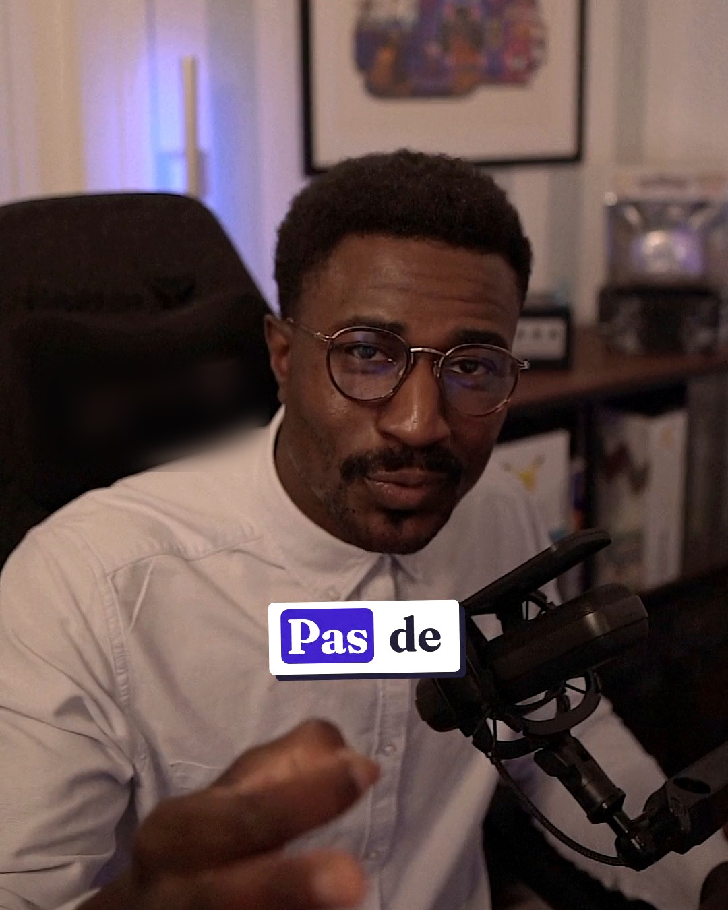
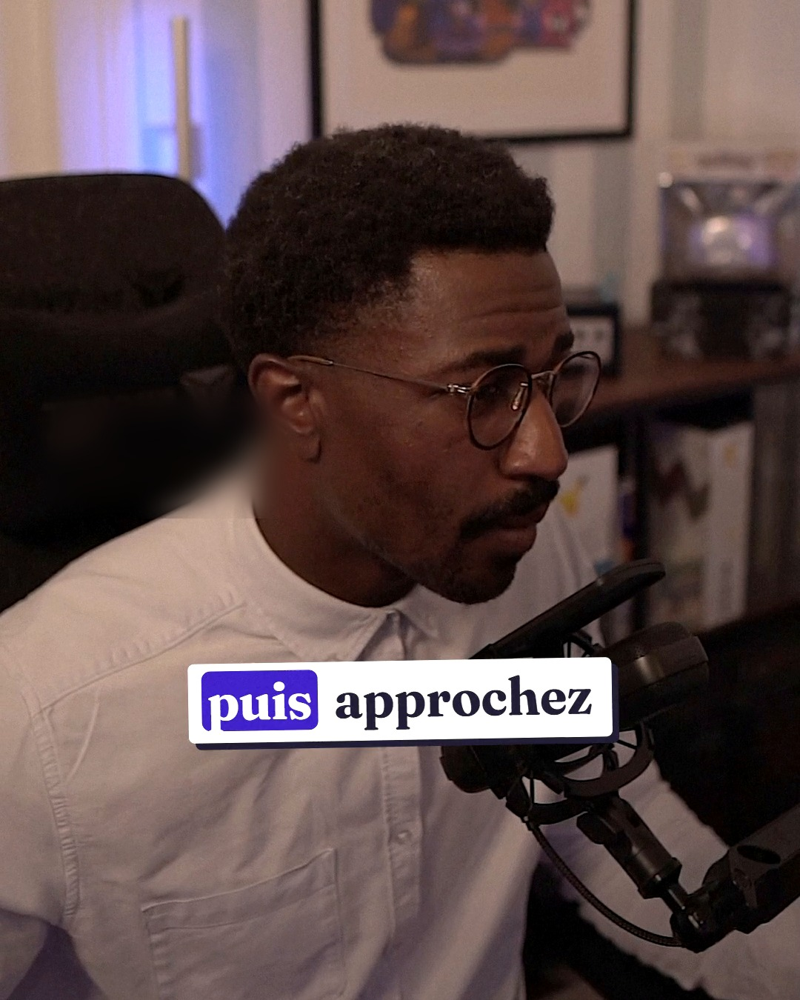

À enregistrer
MAQUETTE
Arnaud · opticien depuis 16 ans
Un client entre. Personne ne le regarde. Voici ce que vous venez de perdre…

MAQUETTE
1. Regardez-le tout de suite.
Même avec un autre client : un sourire, et « je suis à vous dans quelques minutes ». Il sait qu’on l’a vu.